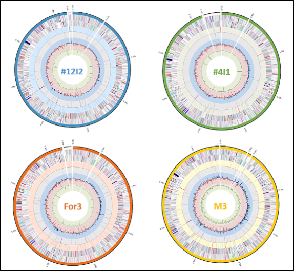

- ANI-based strain comparison and genomic relatedness
- Synteny and alignment-based structural comparison
- Genome context and representative architecture analysis
- Comparison of biosynthetic potential across strains
Linked page: comparative_genomics.html